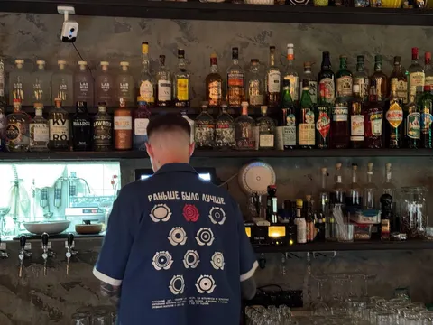

Как и любой дед, я достаточно консервативен. Однако, периодически специально стараюсь себя переломить и попробовать что-то новое. Съездить в новое место, попробовать новое блюдо, пообщаться с новыми людьми - без проблем.
Но вот с чем никак не получается - так это с питерскими барами. Сейчас я не так часто бываю в СПб, и обычно у меня 1, максимум 2 вечера на "культурную программу". И каждый раз я сомневаюсь - разведать ли новое местечко из десятков потрясающих спик-изи баров, или же прогуляться по старым добрым, которые 100% не разочаруют. И почему-то почти всегда иду в старые.
Потому что там я "дома". Знакомые бармены, знакомые specialities, полное доверие бармену при заказе "удиви меня" (это вообще иногда смертельный номер). Даже надпись на спине формы бармена родная ;). Хотя вот недавно добрался до нового заведения perfect bars team - Ruc's Heaven. Что ж, годно, но ребятам еще надо немного наладить все. Зато они могут удивить сидровым вермутом собственного приготовления.
Позволю себе выразить рекомендасьон самым любимым и проверенным местам:
- Цветочки (ул. Некрасова) - потрясающие вариации на гимлет - "Довлатов", "Шисо-гимлет", "гороховый гимлет";
- Полторы комнаты (ул. Маяковского) - лучшая дымная "Кровавая Мэри" на диком западе;
- Джин-тоник (Литейный х Невский) - лучший выбор джинов, но лучше избегать вечеров пятницы и субботы - будет громкая музыка;
- Ой бар (Ломоносова) - специализируются на dry martini и устрицах;
- Ultramen (наб. Фонтанки) - шикарный рамен и колоритные коктейли.
Ну и раз уж начали, и про еду тоже:
- Smoke BBQ (ул. Рубинштейна) - тот самый брискет!
- United Butchers (ул. Восстания) - роскошные стейки;
- Trappist (ул. Радищева) - вафли и бельгийское пиво;
- Chuck (ул. Гороховая) - стейки и ребра;
- Holy Ribs (ул. Жуковского) - ребра и стейки ;)
Отдельной строкой будет чебурешная У Ларисы - зайти туда по пути из бара в отель уже стало нерушимой традицией!
Не готов утверждать, что могу составить конкуренцию авторитетному Ultima Guide от Яндекс Еды, это лишь мой личный топ.
А чтобы вам было удобней сохранить эту памятку себе, собрал для вас коллекцию "Куда сходить" в Яндекс Еде -
https://eda.yandex.ru/user-collection?id=1b15ca98-3542-4755-8822-31e130f45242
А какие у вас любимые места в Питере?
Не является рекламой. Чрезмерное употребление алкоголя вредит вашему здоровью.
